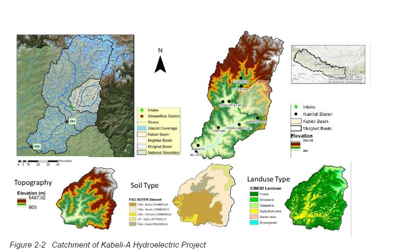

Climate Change Risk Analysis of a Hydropower Project in Nepal
Hydropower project face climate change risks due to changes in hydrology with increasing global temperature. In order to assess the impact on individual hydropower projects, a robustness based bottom-up approach was introduced known as the Decision Tree Framework in 2015. In collaboration with Deltares, and FutureWater, we at the University of Cincinnati analyzed the risks to a hydropower project in Nepal for the World Bank in 2019.
In this project, we conducted a detailed analysis of all available data regarding observed historical and project future hydro-climatic conditions in the basin in order to understand trends, and climate drivers. We then developed a series of models (weather generator, hydrologic model, hydropower generation model, financial model) capable of confidently reproducing historical basin conditions, as well as projecting future productivity. The models were run using a systematically-generated set of scenarios of possible future scenarios of climate (precipitation and temperature), sediment-flow, and financial (capital and operations and maintenance costs). The fundamental risks facing the hydropower project and other similar run-of-river hydropower projects worldwide are: 1) drought; 2) flood; 3) increased sediment load. This project therefore evaluated each those three risks in detail, and summarized findings. 
In course of the project, I proposed an expansion to the established Decision Tree Framework by considering sediment and flood risks in addition to the long-term project performance. I presented the idea in the AGU conferece in 2019 (abstract here) and published in my masters thesis in 2019.
References:
Wasti, A., Wi, S., Rahat, S., Karki, P., Ubierna, M., & Ray, P. (2019, December). Towards a holistic process for climate change risk assessment of hydropower projects. In AGU Fall Meeting Abstracts (Vol. 2019, pp. GC13C-03).
Wasti, A. (2019). Climate Change Risk Assessment of Hydropower Projects: Towards a Holistic Approach [Master’s thesis, University of Cincinnati]. OhioLINK Electronic Theses and Dissertations Center. http://rave.ohiolink.edu/etdc/view?acc_num=ucin1573569567011193